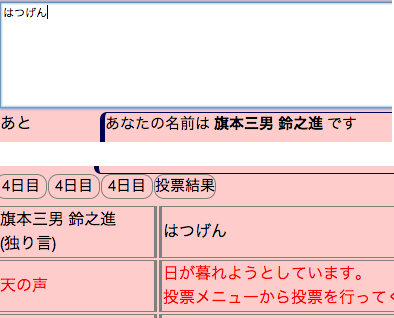
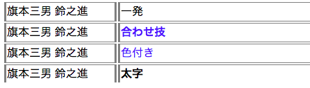

フォームに発言したい内容を入力し、発言ボタンを押すことで発言できます。
ログは自動で更新されます。

素早く発言する
フォームをフォーカスしている状態でTabキーを押すと、発言ボタンにフォーカスが飛びます。
これを使って、Tab→Enterと押すことで素早く発言ボタンを押す事ができます。
発言オプション
「太字」にチェックすると発言が太字に、
「色付」にチェックすると発言が色付きになります。

一発オプション
「一発」にチェックすると、Enterキー押下で即発言できるようになります。
Shift + Enterで、発言せずに改行することができます。